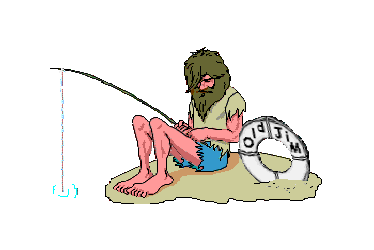

Por
bien no venga
Por
bien no venga
No
ha mal que
Por
bien no venga
 Para mi hija Elena
Para mi hija Elena
Era una noche de tormenta y la golea Peregrina luchaba por mantenerse a flote, sin embargo y a pesar de los esfuerzos de sus marineros por evitarlo la peregrina se hundía arrastrando con ella a toda la tripulación al fondo del mar. Del naufragio solo logró salvarse Leandro el timonel, que con muchas dificultades consiguió llegar a una isla que pudo divisar en la lejanía.

Leandro recorrió la isla que era muy pequeña y comprobó que era el único habitante en ella. Así que dispuso las cosas para que algún barco que pasara por allí pudiera rescatarlo. Para ello construyó una cabaña en la playa y dispuso un lugar para encender un fuego y tenerlo siempre encendido para que pudieran verlo desde lejos.
 Todos
los días Leandro rogaba a Dios para que vinieran a rescatarle, pero los meses
pasaban y por allí no pasaba ningún barco.
Todos
los días Leandro rogaba a Dios para que vinieran a rescatarle, pero los meses
pasaban y por allí no pasaba ningún barco.
Un día en
que Leandro fue al interior de la isla en busca de comida el fuego se extendió y
alcanzó la cabaña, por lo que se quemaron todas las cosas que Leandro tenía. Desesperado lloró con desconsuelo porque creyó que
Dios le había abandonado, hasta que rendido se quedó dormido en la playa.
cosas que Leandro tenía. Desesperado lloró con desconsuelo porque creyó que
Dios le había abandonado, hasta que rendido se quedó dormido en la playa.
Le despertó uno de los marineros que habían llegado a la isla para rescatarle. Cuando Leandro les preguntó que cómo le habían encontrado los marineros le dijeron: “Vimos un gran fuego desde alta mar y nos acercamos para ver de donde procedía. Lo que Leandro consideró un mal había sido su salvación.
Por lo que se suele decir que , no hay mal que por bien no venga.